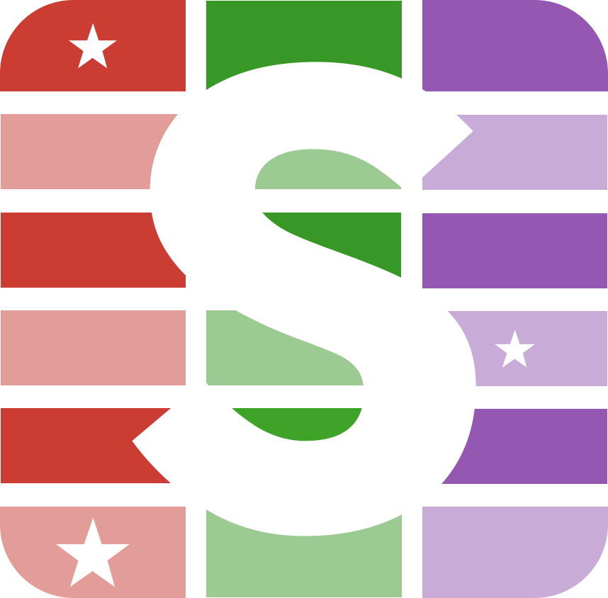

StyledTables
Apply custom formatting to tables in Julia - render HTML, docx, LaTeX and Typst
Apply custom formatting to tables in Julia - render HTML, docx, LaTeX and Typst

StyledTables adds GT-style formatting to summary tables. Tables render to HTML, docx, LaTeX, and Typst. It builds on SummaryTables.jl, with an API inspired by R's gt package.
StyledTables is not yet registered. Install from GitHub:
using Pkg
Pkg.add(url="https://github.com/simonsteiger/StyledTables.jl")using StyledTables, DataFrames, PalmerPenguins, Chain
using Statistics: mean
df = @chain DataFrame(PalmerPenguins.load()) begin
dropmissing(_)
groupby(_, [:island, :species])
combine(_, Cols(r"bill") .=> mean => identity)
end
tbl = StyledTable(df)
tab_row_group!(tbl, :island)
cols_hide!(tbl, :island)
tab_spanner!(tbl, "Bill measures" => [:bill_length_mm, :bill_depth_mm])
labels = [
:species => "Species",
:bill_length_mm => "Length",
:bill_depth_mm => "Depth"
]
cols_label!(tbl, labels)
render(tbl)